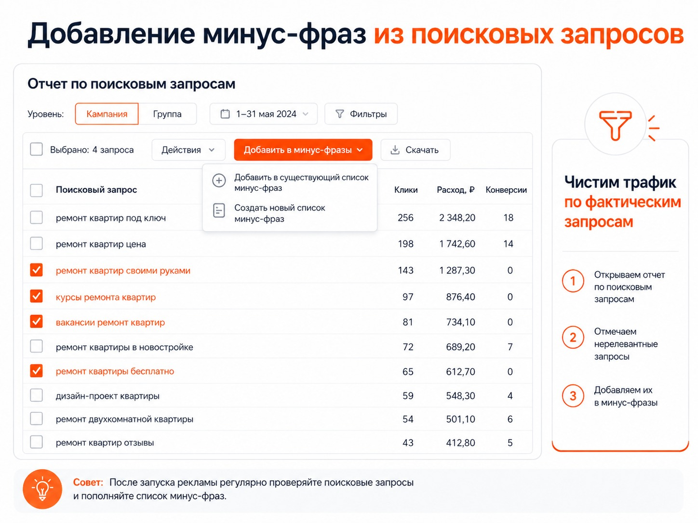

Блог о платном трафике
Минус-фразы для Яндекс Директа: как собрать список и правильно добавить
Готовый список минус-фраз из интернета лучше не копировать в рекламную кампанию. У разных бизнесов отличаются товары, услуги, регионы, аудитория и допустимые поисковые запросы. Чужой список легко исключит вместе с мусорным трафиком тех, кто мог стать клиентом.
С минус-фразами я работаю в два этапа. До запуска рекламы просматриваю семантику через Вордстат и исключаю очевидно нерелевантные запросы. После запуска регулярно проверяю реальные поисковые запросы в Яндекс Директе и дополняю список уже на основании фактического трафика.
Для отдельной ключевой фразы используются минус-слова, а минус-фразы можно добавлять для группы объявлений или всей кампании. Они применяются совместно.
Что такое минус-фразы в Яндекс Директе
Минус-фразы - это слова и сочетания слов, при наличии которых Яндекс исключает определённые показы рекламы. Например, компания занимается ремонтом квартир, но не обучает ремонту. Тогда запросы «ремонт квартир своими руками», «курсы ремонта квартир», «обучение ремонту квартир» и «работа мастер ремонт квартир» стоит проверить как кандидаты на исключение.
Минусовать нужно смысл запроса, а не все слова, которые кажутся информационными. Пользователь, который ищет отзывы, цены или сравнивает варианты, может находиться на этапе выбора подрядчика и быть целевым.
Почему готовый список минус-фраз может навредить
В универсальных списках часто встречаются «бесплатно», «отзывы», «форум», «инструкция», «своими руками», «б/у», «вакансии» и «обучение». Но одно и то же слово в разных проектах имеет разный смысл: например, «б/у» не подходит магазину новых автомобилей, но критично для продавца подержанных.
Поэтому минус-фразы нужно собирать под конкретный проект и проверять перед добавлением.
Как собрать минус-фразы до запуска рекламы
1. Соберите основные направления спроса
Сначала определите базовые запросы, которые описывают товар или услугу: например, «ремонт квартир», «ремонт квартир под ключ», «ремонт новостройки».
2. Посмотрите реальные формулировки пользователей в Вордстате
По каждой основной фразе посмотрите связанные запросы и определите, какие дополнительные слова меняют намерение пользователя. Для услуг обычно не нужны запросы людей, которые ищут работу, обучение, другой товар, самостоятельное выполнение работ, недоступный продукт или регион вне зоны обслуживания.

3. Не минусуйте сомнительные слова автоматически
Запросы «ремонт квартиры отзывы» или «сколько стоит ремонт квартиры» выглядят информационными, но за ними может стоять потенциальный заказчик. Если есть сомнения, лучше сначала оставить запрос и оценить статистику после запуска.
На каком уровне добавлять минус-фразы
Минус-фразы на уровне кампании
На уровне кампании стоит исключать запросы, которые точно не нужны всем группам внутри неё. Например, если компания вообще не оказывает бесплатные услуги, это направление можно убрать для всей кампании после проверки, что ограничение не отсечёт полезный спрос.
Минус-фразы на уровне группы
Если слово мешает только одной части рекламы, ограничивайте его конкретной группой. Например, нельзя исключить «б/у» на всю кампанию, если одна группа продаёт новые автомобили, а другая - подержанные.
Как массово добавить минус-фразы сразу в несколько кампаний
В списке кампаний выберите нужные кампании, откройте меню действий и добавьте минус-фразы. Перед сохранением проверьте, выбрано ли действие «добавить» или «заменить список»: замена удалит текущие ограничения.
Как массово добавить минус-фразы в группы
Для групп действует тот же принцип: применяйте ограничение только там, где оно не помешает другим рекламным предложениям. Если фраза нужна нескольким группам, удобнее использовать список минус-фраз и подключить его к нужным группам.
Библиотека минус-фраз
Библиотека удобна, когда один и тот же набор ограничений применяется в нескольких кампаниях. Но список нужно поддерживать: изменение общей библиотеки влияет на все кампании и группы, где она подключена.
После запуска работу с минус-фразами нужно продолжать
Предварительная чистка не заменяет анализ фактического трафика. В отчёте по поисковым запросам видны формулировки, по которым были показы и переходы. Именно там появляются новые нерелевантные направления, которые невозможно полностью предсказать до запуска.
Как добавить минус-фразы прямо из отчёта по поисковым запросам
- Откройте отчёт по поисковым запросам.
- Отметьте явно нерелевантные формулировки.
- Проверьте, не исключит ли минус-фраза целевой спрос.
- Добавьте их в существующий или новый список минус-фраз.

А что делать с автотаргетингом
Минус-фразы не заменяют работу с автотаргетингом. Автотаргетинг подбирает запросы по объявлению и странице перехода, поэтому после запуска важно смотреть отчёт по поисковым запросам и тип условия показа. Подробнее - в статье как настроить рекламу в Яндекс Директ.
Нужно ли использовать минус-фразы в РСЯ
Минус-фразы относятся к поисковым запросам. В РСЯ важнее контролировать площадки, аудитории, креативы и результат по конверсиям, а не переносить механику поисковой минусации на сеть.
Как часто проверять поисковые запросы
Частота зависит от объёма трафика. На активных кампаниях проверка может быть ежедневной или еженедельной, на небольших - после накопления достаточного количества данных. Важно не добавлять ограничения по единичному случайному запросу без оценки его смысла и результата.
Как я работаю с минус-фразами на практике
- До запуска исключаю только очевидно нецелевые направления.
- После запуска смотрю реальные поисковые запросы и расходы.
- Сначала оцениваю смысл запроса, затем - показы, клики и конверсии.
- Добавляю минус-фразу на уровне группы или кампании, который не нарушит остальные направления.
- Регулярно пересматриваю общий список, если он используется в нескольких кампаниях.
Главное
Минус-фразы помогают не платить за нецелевой трафик, но не являются готовым универсальным списком. Собирайте их под конкретный бизнес, начинайте с очевидных исключений и регулярно дополняйте по отчёту поисковых запросов. Это сохранит охват там, где ещё могут быть клиенты, и снизит расходы на явно нерелевантные переходы.
Полезно также разобраться, как работают операторы Яндекс Директ, и сравнивать качество трафика с целевыми действиями, а не только с количеством кликов.